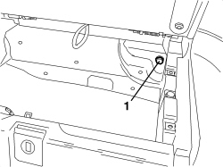
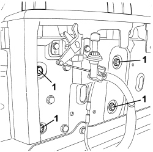
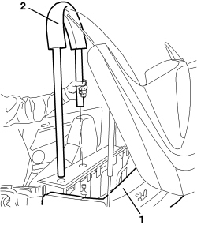
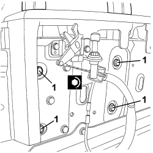
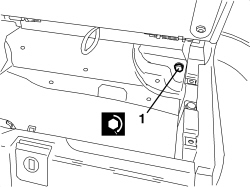

7055B20 ROLL BAR, LEFT OR RIGHT - R.R.
- Path
- Procedures > 70 FITTINGS > 7055 MOULDINGS AND PROTECTION > 7055B EXTERIOR PROTECTIONS > 7055B20 ROLL BAR, LEFT OR RIGHT - R.R.
- Kind
- repair procedure (removal / refitting; the operation number is the code)
- Applies to
- engines: 2.2 JTS, 3.2 JTS; all production periods; only with equipment: Spider
- Interactive page
- https://sloeber94.github.io/elrnDB-aBrrSpdr/en/#/946004195
Applies to: engines: 2.2 JTS, 3.2 JTS; all production periods; only with equipment: Spider
 Removing
Removing
 Refitting
Refitting- Prepare the hood for the operation.
Op. 0010T79 HOOD HYDRAULIC SYSTEM - DISCHARGE AND RESTORE PRESSURE
Op. 7065C96 REAR WIND STOP - R.R.
Op. 7040C11 HOOD HOUSING COMPARTMENT FLOOR TRIM - R.R.
Op. 7040C12 HOOD HOUSING COMPARTMENT FRONT TRIM - R.R.
Op. 7040L31 REAR ODDMENTS COMPARTMENT - R.R.
1. Working in the rear oddments compartment housing, undo the roll bar fixing bolt.

Applies to: engines: 2.2 JTS, 3.2 JTS; all production periods; only with equipment: Spider
1. Working in the hood compartment, undo the roll bar fixing bolts.

Applies to: engines: 2.2 JTS, 3.2 JTS; all production periods; only with equipment: Spider
1. Place the hood carefully in its housing compartment.
2. Extract the roll bar.

Applies to: engines: 2.2 JTS, 3.2 JTS; all production periods; only with equipment: Spider
Refitting
Removing- Check that the roll bar is not damaged.
- Fit the roll bar in place.
- Close the hood carefully and raise the 5th arc vertically.
1. Working in the hood compartment, tighten the roll bar fixing bolts.
Component | Fastening | dia | Value (daNm) | Validity |
|---|---|---|---|---|
ROLL BAR FASTENINGS | Bolt | - | 2.0 ÷ 2.8 | Spider |

Applies to: engines: 2.2 JTS, 3.2 JTS; all production periods; only with equipment: Spider
1. Working in the rear oddments compartment housing, tighten the roll bar fixing bolt.
ROLL BAR FASTENINGS | Bolt | - | 2.0 ÷ 2.8 |

Applies to: engines: 2.2 JTS, 3.2 JTS; all production periods; only with equipment: Spider
Op. 7040L31 REAR ODDMENTS COMPARTMENT - R.R.
Op. 7040C12 HOOD HOUSING COMPARTMENT FRONT TRIM - R.R.
Op. 7040C11 HOOD HOUSING COMPARTMENT FLOOR TRIM - R.R.
Op. 7065C96 REAR WIND STOP - R.R.
- If discharged, restore the hood hydraulic system pressure.
Op. 7030H03 HOOD MANUAL OPENING FOLLOWING DEACTIVATION OF HYDRAULIC SYSTEM - CARRY OUT PROCEDURE
- Close the hood using the electric control.
Topics linked from this page (6)
- 0010T79 HOOD HYDRAULIC SYSTEM - DISCHARGE AND RESTORE PRESSURE
- 7030H03 HOOD MANUAL OPENING FOLLOWING DEACTIVATION OF HYDRAULIC SYSTEM - CARRY OUT PROCEDURE
- 7040C11 HOOD HOUSING COMPARTMENT FLOOR TRIM - R.R.
- 7040C12 HOOD HOUSING COMPARTMENT FRONT TRIM - R.R.
- 7040L31 REAR ODDMENTS COMPARTMENT - R.R.
- 7065C96 REAR WIND STOP - R.R.